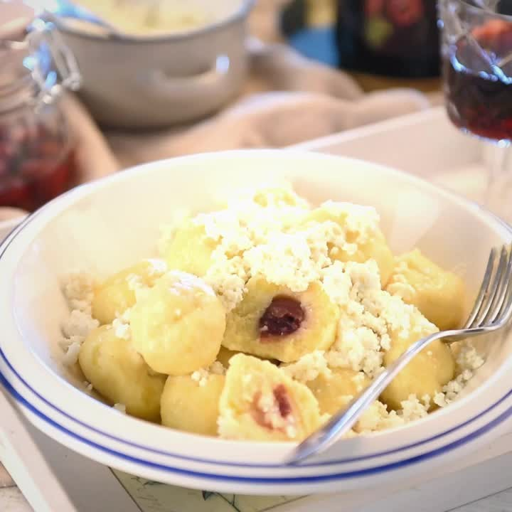

Zemiakové knedle podľa @komora_coopjednota — Normy Jedál
Oslaďte si záver týždňa domácimi zemiakovými knedľami. Zavárané čerešne alebo iné ovocie použijeme ako plnku a posypeme tvarohom. Videorecept nájdete na bit.ly/ceresnove-knedle. 🍒⠀
#komoragazdin #recept #videorecept #obed #hlavnychod #ceresne #domace #zemiakoveknedle #knedle #tvaroh #sladkyobed #koniectyzdna #ovocie #dobruchut